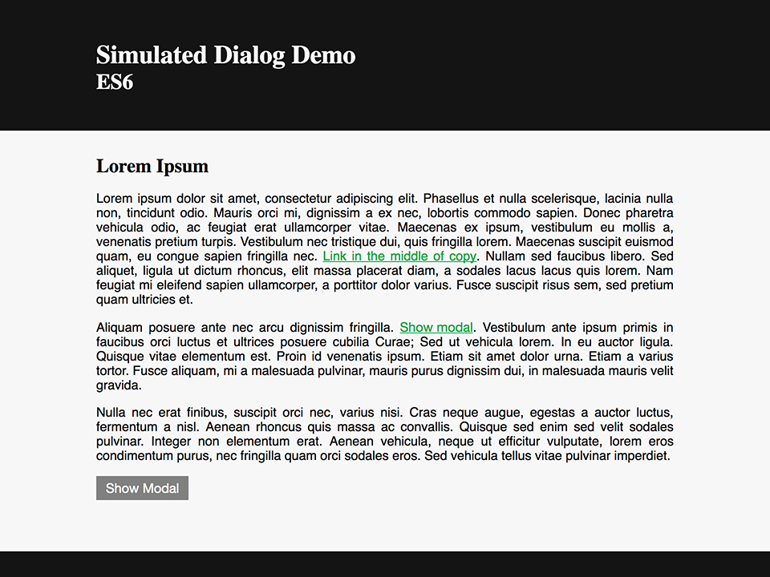
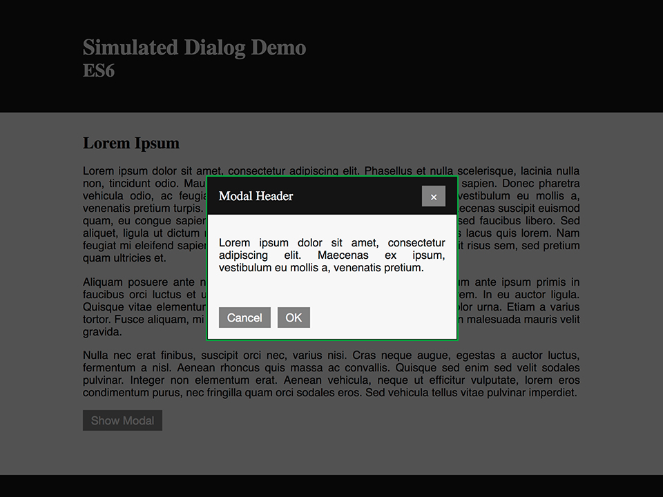

How to build accessible
Simulated Dialogs
a.k.a. Modals
by Mat Janson Blanchet
Foreword
-
Features presented here
based on professional experience
(I am not an accessibility expert yet) -
There are many alternative ways
to implement this functionality
(This is an opiniated presentation, not normative) -
Not an exhaustive presentation
on what is accessibility
(But...)
Accessibility
- Don't just develop for the happy path.
-
Inclusiveness is not a nice-to-have,
it's respecting people. -
Build interactive content for everyone.
- Autistic spectrum
- Deaf or hard of hearing
- Dyslexia or limited litteracy
- Low vision and non-sighted
- Motor disabilities
Screen Reader
An assistive technology that reads
the screen content out loud to the user.
Let's build!
Layout
 Features to implement
- Ensure links that spawn dialogs indicate the fact
- Provide a descriptive dialog title
- Ensure dialogs use proper structure
- Ensure that when dialogs are activated
focus moves appropriately - Ensure that keyboard focus remains within modal dialogs
- Ensure that dialogs can be closed via the keyboard
- Ensure keyboard focus returns properly from dialogs
Screen Reader Accessibility:
Ensure links that spawn dialogs indicate the fact
TODO
Augment HTML
with appropriate attributes
for screen readers.
title
The title global attribute contains a text representing advisory information related to the element it belongs to. Such information can typically [...] be presented to the user as a tooltip.
✘
aria-label
The aria-label attribute is used to define a string that labels the current element. Use it in cases where a text label is not visible on the screen.
✔
Add appropriate copy to aria-label
for screen reader to inform the user.
Demo
Don't use <a>
The HTML <a> element is meant to create a hyperlink.
Code like this breaks accessibility
and is semantically incorrect:

Use the <button> element instead.
Screen Reader Accessibility:
Provide a descriptive
dialog title
Focus Management:
Ensure that when
dialogs are activated
focus moves appropriately
TODO
Use element.focus()
to set focus to modal
when user action request modal display.
element.focus()
The HTMLElement.focus() method sets focus on the specified element, if it can be focused.
✔
Use the id attribute
-
Unique instance of modal
No multiple instances of modal at once -
Use of
document.getElementById()
JavaScript is not the enemy of accessibility
The tabindex attribute
Focus not immediate
Use of setTimeout()
Focus Management:
Ensure that keyboard focus
remains within
modal dialogs
Keyboard Accessibility:
Ensure that dialogs
can be closed
via the keyboard
Focus Management:
Ensure keyboard focus
returns properly
from dialogs
Additional Notes
aria-hidden
MVC
Projects built with MVC pattern
About Me

Mat Janson Blanchet
Technical architect and developer
with a focus on UI and UX
Available for contractual work
Presentation Material
Slides
Sources